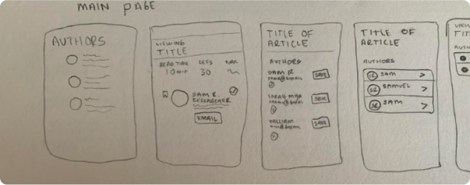

Green Pages
2022 - 2023
Green Pages is a simple browser extension that enables effortless collaboration and author verification to streamline online workflow in conservation.
Scotiabank Capstone Award - Third Place 🥉
Through a series of preliminary discussions with William and Mary, we identified several issues related to information management. One of the primary challenges we encountered was the overwhelming amount of information available across multidisciplinary fields. The sheer volume of data makes it difficult to distill and connect relevant information, particularly in a way that doesn't overwhelm the user.
Furthermore, we identified two distinct user categories:
Contributors - Contributors are individuals who generate content or data. These users require an incentive to provide knowledge on websites and forums. Typically, contributors are composed of scientists, academics, professionals and passionate individuals.
Workers - Workers are individuals who consume this information to perform their tasks. These users work within structured environments like government agencies, zoos, classrooms, laboratories, forests and bodies of water. Workers require proper tools that they can use while in the office or the field.
Both of these user groups require a tool that allows them to access information quickly and easily.
We began with creating a picture of what a competitor truly looks like within the conservation space. We shortlisted two types of potential competitors to draw aspects from in order to best formulate a path forward.
Knowledge Tools - Knowledge and science based tools are repositories that are factually sound and can provide an excellent source of learning for the user.
Engaging Content - Engaging, shareable, and entertaining sites or applications that draw users in and keep them coming back.
We looked at a variety of sites and apps among the list of available knowledge and science based tools, including: U.S Climate Toolkit, WeConserve PA, Bon in a Box, Climate Toolbox, DIY Toolkit, WWF and Panorama. We found that these tools did a great job of hosting and collecting a large amount of conservation data, however lacked the fundamentals to successfully present it in a digestible way.
In order to establish a clear focus for the ongoing project, it became necessary to conduct moderated interviews with experts in the field of conservation. The interviews were conducted via Zoom and involved a diverse range of conservationists from various fields, such as grasslands, birds, oyster, and others with a wide range of experience levels spanning from 10 to 40 years.
Additionally, environmental students were also included in the interview process to provide additional perspectives and ideas.
The study revealed two key issues. The first issue was the general lack of accessible information, as many information sources are blocked by firewalls and university passwords. Conservationists expressed frustration with the difficulty of finding reliable and up-to-date information. This was particularly challenging for those working in remote areas or with limited internet access.
The second and more significant finding was the reliance of conservationists on knowledge sharing within their community. Conservationists often obtain information through informal networks of colleagues, partners, and collaborators. This approach has several advantages, including the ability to access tacit knowledge, learn from the experience of others, and build relationships that can lead to future collaborations.
Firstly, the platform is intended to foster connections among users who are working on the same or similar projects. This involves providing a space where users can collaborate, share ideas, and network with one another. By facilitating these interactions, the platform can help users to find new ways to approach their work, identify common challenges and solutions, and potentially develop new partnerships and collaborations. Additionally, the platform should allow users to easily see the work of others, compare and contrast findings, and stay up-to-date with the latest developments in their field.
Secondly, the platform should prioritize verification and transparency in the information that is presented. This means that users should be able to easily identify what information is trustworthy and where it is coming from. By providing clear sources for information and enabling users to verify its accuracy, the platform can help users make more informed decisions and avoid potentially misleading information.
Finally, the platform must be easy to use and not create additional work for the user. This involves designing the platform in a way that is intuitive and user-friendly, with minimal barriers. Additionally, the platform should be more effective and efficient than existing tools, providing users with a faster and more effective means of achieving their goals. This can involve streamlining workflows, automating certain tasks, or providing tools that enable users to easily analyze and visualize data.
The original solution built off these findings and stories. Our goal was to facilitate the finding of another professional’s email, in order to streamline the research gathering process. Essentially this solution was a roundabout way to find someone’s email. In order to do this, one had to search for a project similar to their own, find one that appeared relevant, and then by clicking on the project you would be able to see more information as well as the key contributor’s email.
After our initial user tests, we discovered that this method was no easier than the current methods for finding an email. A pivot was therefore necessary.
With our focus still on facilitating the finding of emails to streamlining the research process, we head back to the drawing board. During a brainstorming session, we began to focus on a lightweight browser extension that could pull author contact information in real-time as the user is researching a website.

Our solution is called Green Pages, a simple browser extension that enables effortless collaboration and author verification to streamline online workflow in conservation. Focusing on the collaboration aspect of the research process, Green Pages aims to promote communication between conservationists and help them save time on their research.
With Green Pages, conservationists can view a paper and immediately find the email of the author. From there, they can directly send a message to the author. Normally, a conservationist would view a paper and search the author to attempt to find their email address. Our solution simplifies this process by removing unnecessary steps and allowing the conservationist to email the author directly.
Green Pages also includes a verification system that allows conservationists to see how credible an author is and if the contact information provided is legitimate. Knowing that you have the correct email for another conservationist is important for researching and for building connections with other conservationists. Additionally, users can also view other articles by the same author from within the extension.
In order to further improve our designs, we conducted a series of user testing sessions remotely. Using the think aloud process, participants were given a scenario and asked to navigate the extension.
After completing the task, we determined the success rate using the metric of task completion. Post task questions also included the metric of how confident the participant was after completing the task.
Task 1 - You are in the planning stage of a new conservation project. You find an interesting article and would like to reach out to the author to learn more.
Task 1 had a success rate of 100%, with most participants feeling confident with their completion of the task.
Task 2 - You find the main author of the article you are viewing but want to confirm whether or not they are a verified source.
Task 2 had a success rate of 40%, with most participants feeling somewhat confident in their completion of the task.
A significant number of participants did not click on the verification percentage which caused the task to be incomplete. In the post-session interview, participants told us that the verification percentage did not look clickable and did not fit with their mental models of what a clickable feature should look like.
We made changes to both the visual fidelity and interactivity of our designs based off of the data collected from the second round of our user testing. A third and final round of user testing would be beneficial, however due to time constraints it could not be completed.
Taking this project further, we would like to consider the possibility of rollout for Green Pages. We think it can be included with the direction William and Mary takes with their integrative conservation clinic as a tool on the site. It would be incredibly useful to help people find emails on the site fast.
After developing the extension and testing it on a large scale we could consider making Green Pages available for download from search engine stores such as the Chrome Web store. We would like to consider the possibility of expanding to a wider range of research fields. Green Pages allows users to connect with the authors of papers they are viewing, which can be useful for many fields of work, not exclusively conservation.